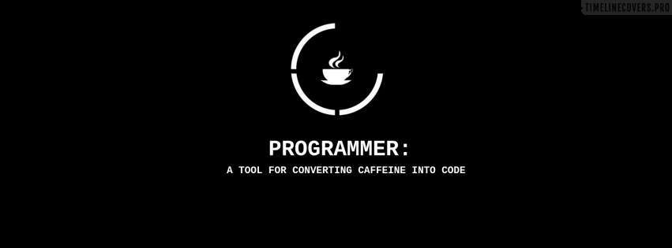

25 blogger IT nổi tiếng mà dân lập trình ai cũng phải biết
 Tác giả: HaiDM - Worpdress Developer
Tác giả: HaiDM - Worpdress Developer

Coding Horror
Tác giả của blog này là blogger cực kỳ nổi tiếng – Jeff Atwood, đồng sáng lập website hỏi đáp Stack Overflow thân thuộc với developer. Blog này với tiêu đề “Programming and Human Factors” viết về kinh nghiệm nhiều năm làm lập trình với những vấn đề “rùng rợn” của developer nhưng cuối cùng luôn đi kèm giải pháp cho vấn đề đó.
Joel on Software
Joel Spolsky là nhà đồng sáng lập Stack Overflow cùng Jeff Atwood. Bạn có thể tìm thấy mọi thứ như thiết kế, phát triển phần mềm, quản lý cho đến bán sản phẩm ra thị trường. Độc giả blog cũng đa dạng từ junior developer, rock-star developer, software designer, tech lead, project manager, start-up, founder cho đến CEO. Và quan trọng là các bài viết của Joel cực kỳ chất lượng.
Scott Hanselman
Scott Hanselman là một developer, giảng viên và diễn giả làm việc cho nhóm web platform tại Microsoft. Với kinh nghiệm lập trình đa dạng, những bài viết của Scott là kho công cụ cực kỳ hữu ích cho developer và những ý kiến về công nghệ, văn hóa, code và web.
Dr.Dobb’s
Một nhóm developer giàu kinh nghiệm thực hiện blog với những bài viết sâu sắc về phát triển phần mềm đám mây, web và những ngôn ngữ lập trình căn bản như C++, Java.
Phil Haack
Phil Hacck làm việc tại Github có sự quan tâm đặc biệt với cộng đồng phần mềm mã nguồn mở. Blog chia sẻ những kinh nghiệm về lập trình, Github và các dự án mã nguồn mở anh đang tiến hành
"Mọi người nên học lập trình máy tính, bởi vì nó dạy bạn cách tư duy."Steve Jobs
<!DOCTYPE html>
<html lang="en">
<head>
<meta charset="UTF-8">
<meta name="viewport" content="width=device-width, initial-scale=1.0">
<title>Document</title>
</head>
<body>
</body>
</html>
Minh hoạ html
<style>
body {
color: #FFF;
background: #333;
font-size: 1.15rem;
line-height: 1.5;
margin: 0;
}
</style>
Minh hoạ CSS